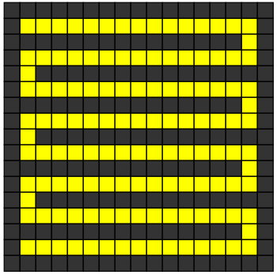

ビ太郎のお城の地下にはモンスターが住んでいます。
お城の地下は次の図のようになっていて，モンスターは127個ある黄色の部屋のどこかに隠れています。モンスターは黒い部屋には入れません。

黄色の部屋を1つ壊すと，モンスターは壊れた部屋の向こうにはいけなくなり，モンスターが隠れられる部屋の部屋の数が減ります。
壊す部屋にモンスターがいるとモンスターは他の部屋に逃げます。
モンスターが隠れる部屋が1つになると，モンスターを捕まえられます。
モンスターを捕まえるのに必要な部屋を壊す回数の最小値を入力してください。